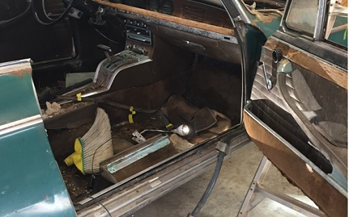
February 2017- Door Removal
click images to enlarge
Lower Interior Panel
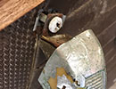
{kind=link}
Upper interior panel
With the lower panel removed, the small screws that secure the upper black vinyl, wood and chrome top piece. Remove screws and gently pry up to remove.
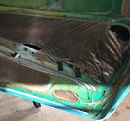
{kind=link}
Take care to note position and save the extra trim pieces with piping inserted on the front and back of door interior. Also remove the vapor barrier. This is one telltale sign of previous ownership of a car. Poor ownership is revealed with vapor barriers removed, or replaced with shoddy plastic bags or the like.
Exterior Chrome Strip
Remove by prying up carefully
Window glass
Rear slide plate attached to slide rail with 3 bolts (10mm) and forward connection with 2 bolts, crank window to low position to remove from regulator arm
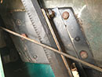 |
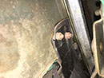 |
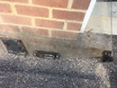 |
{kind=link}
{kind=link}
{kind=link}
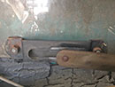
{kind=link}
This is a 2000 "C" and therefore has crank windows. Regulator is secured by 3 bolts 10mm. Also slide the regulator arm carefully free from the window base bracket (previous step).
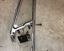
{kind=link}
The lower frame for the quarter vent window also functions as the forward window glass rail. 2 bolts at the top (one long) to secure frame with one unique nut slightly below, 3 bolts that secure geared crank mechanism, and one nut and log threaded arm at base. One other aspect is removing the securing bolt that secures the window frame to the geared crank mechanism. You may have to slightly pry the arm free from the yoke.
Rear Window Glass Guide Rail
This is secured by two nuts at the top and two at the bottom.
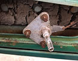
{kind=link}
Remove 3 bolts secure interior handle (spline) base, push mechanism into door cavity still attached to wire arm and let dangle.
Exterior chrome door handle (2 screws)
Release the internal door mechanism for the exterior handle (4 bolts top and bottom). Remove bolt to arm for tumbler which will give you more space to loosen the two back-to-back large threaded chromed nuts. With these back off, remove the keyed tumbler from the outside. Remove the large screws securing the base plate for the latch on the door jam. The interior mechanism should then fall free (in two pieces). Re-secure the tumbler arm to the main mechanism.
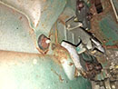 |
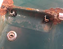 |
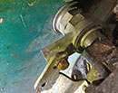 |
{kind=link}
{kind=link}
{kind=link}
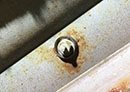
{kind=link}
From inside the door cavity, remove the nuts and plastic bases that secure the belt trim. One is accessed from the outside forward. Pull belt trim free. Make note of where the threaded shaft reside on the trim (for when you reinstall.
Door Stop
Remove the securing pin between the stop arm and the eyelets on the body of the car. These pins seem to be threaded or have expanded bases. Inspect carefully, and drive from bottom and then use a drift pin to push upwards. One arm is free from body, release stop from door (2 bolts). Be careful not to let the door open beyond it's intended range least you serious dent the door sheet metal by pressing into fender.
Power Window Wires
Even though this is a crank window car, the factory installed dummy power window wires. Pull them out.
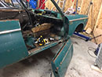
{kind=link}
Remove bolts that secure the door to the hinges on the door side. The top hinge has one bolt accessed under a plastic cap. Slide door off.